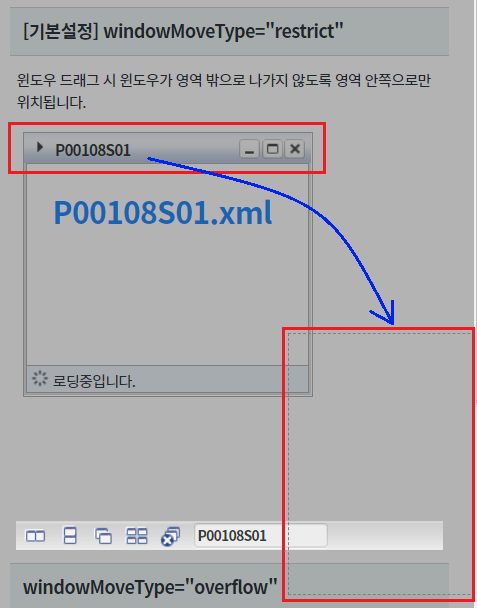
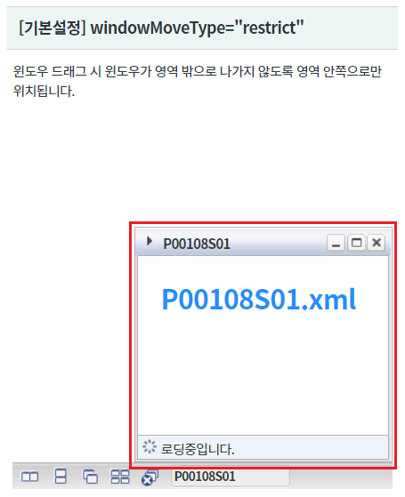
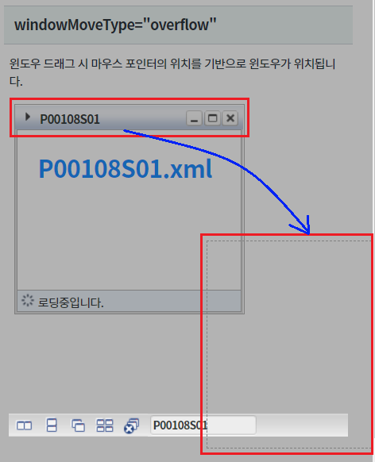
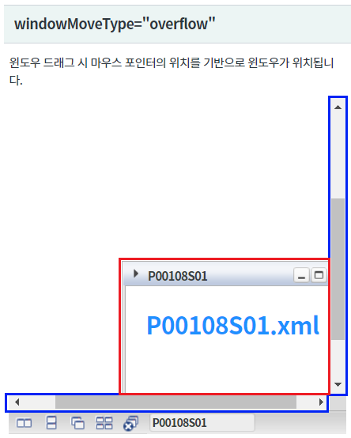
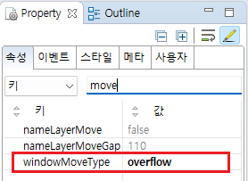
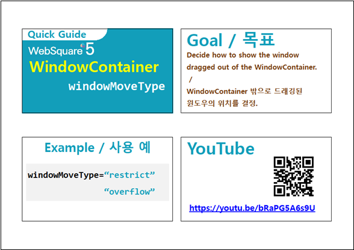

속성 "windowMoveType" 설정의 예제입니다. 속성 "windowMoveType"은 마우스 Drag&Drop을 통해 이동된 윈도우의 좌표가 WindowContainer의 영역의 밖인 경우 동작합니다. 설정에 따라 윈도우의 위치를 영역 안쪽으로 위치 시키거나 마우스 포인터의 좌표에 따라 윈도우를 위치 시킬지를 결정할 수 있습니다.
[기본설정] windowMoveType="restrict"
windowMoveType="overflow"
각 영역의 윈도우를 WindowContainer의 영역 밖으로 Drag&Drop합니다. 윈도우가 위치되는 방식을 비교합니다.
[브라우저(Chrome) 실행 예시]

윈도우가 WindowContainer 내부에 위치됩니다.
[브라우저(Chrome) 실행 예시]

[브라우저(Chrome) 실행 예시]

WindowContainer에 스크롤이 생성되며 마우스 포인터 좌표를 기반으로 윈도우가 위치됩니다.
[브라우저(Chrome) 실행 예시]

윈도우를 생성(추가)하는 스크립트는 생략되었습니다.
WindowContainer의 속성을 정의합니다.
[필수] windowMoveType="overflow" //[default:restrict, overflow] 윈도우 드래그시 영역밖으로 나갈때 동작 속성 지정.
그림 1.웹스퀘어5 SP5 스튜디오의 Property View(속성창) 예시

[소스 코드 예시]
<!-- windowContainer 의 소스 본문 예시 --> <w2:windowContainer windowMoveType="overflow"> <!-- 중략 --> </w2:windowContainer>
windowMoveType
[웹스퀘어5 SP5 개발 가이드] WindowContainer
링크 : https://docs1.inswave.com/sp5_user_guide/2059d4ce88b2fc16#c65cb349eb266637
[웹스퀘어5 SP5 개발 가이드] WindowContainer 윈도우 드래깅 시 윈도우 표시 (windowMoveType)
링크 : https://docs1.inswave.com/sp5_user_guide/2059d4ce88b2fc16#14c9fb91021e9d0e
WindowContainer 윈도우 드래깅 시 윈도우 표시 (windowMoveType)
링크 : https://youtu.be/bRaPG5A6s9U
